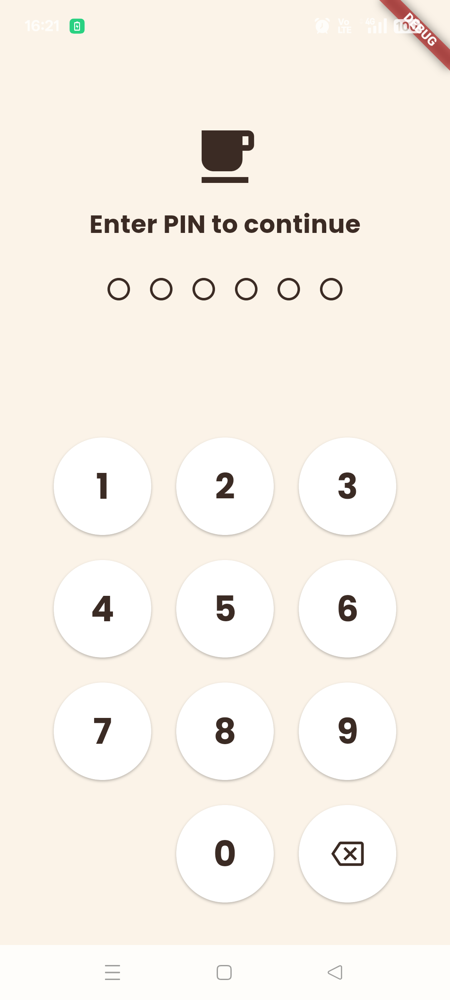
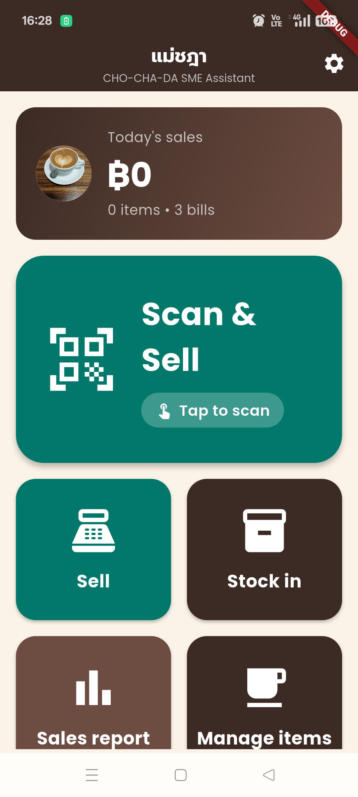
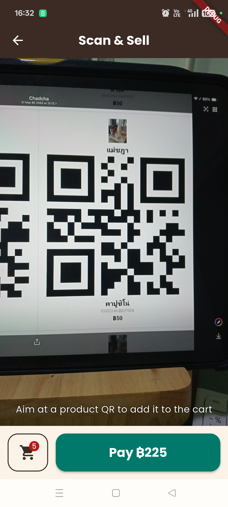
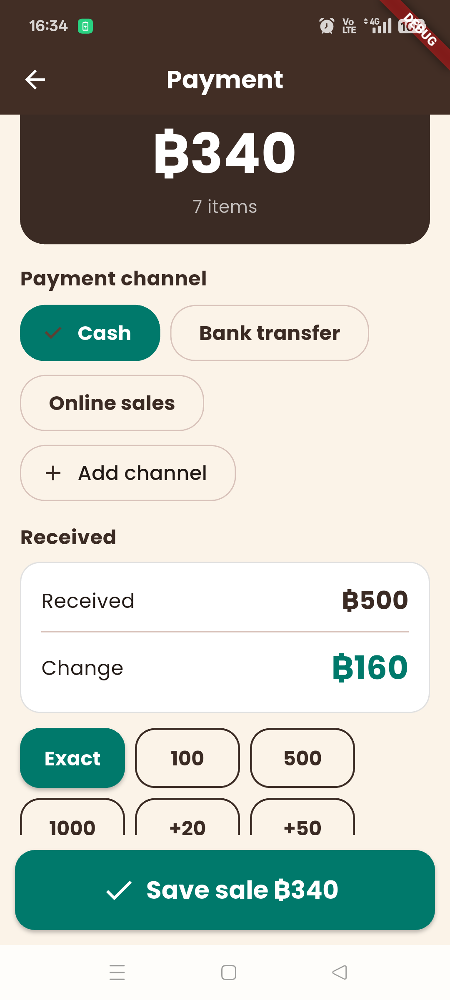
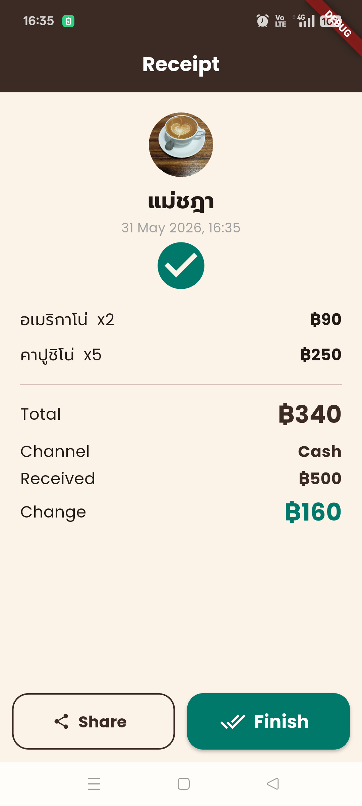
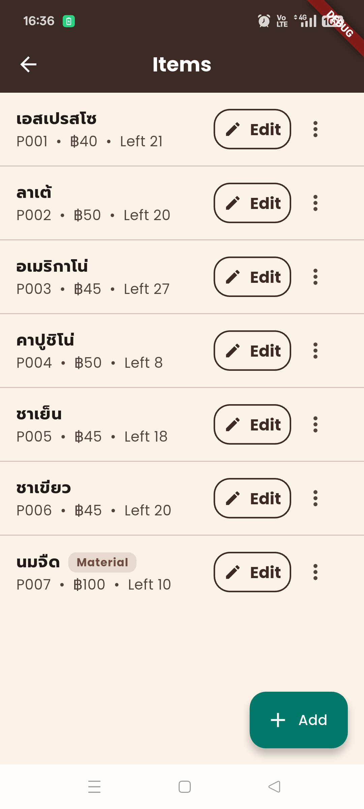
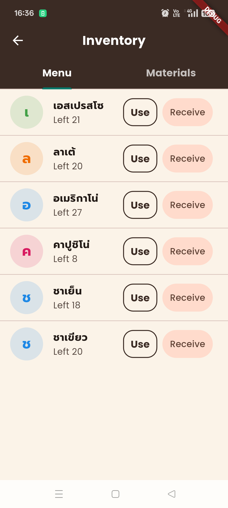
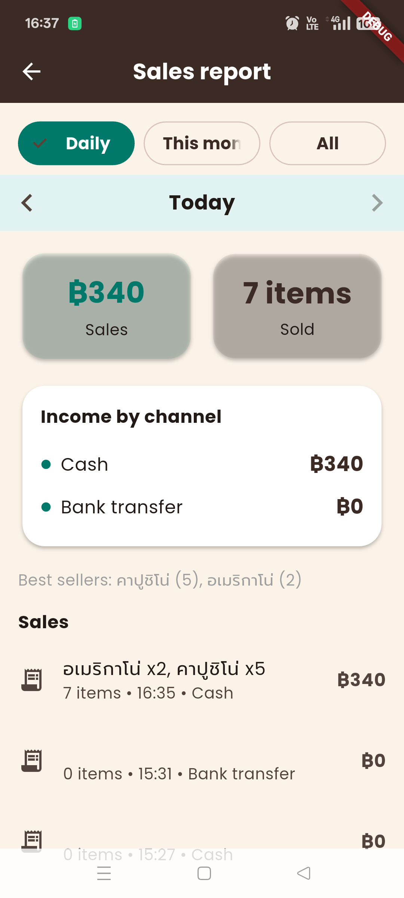
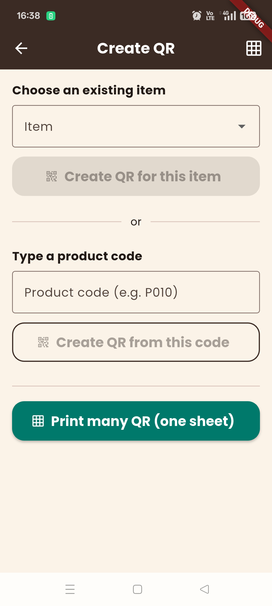
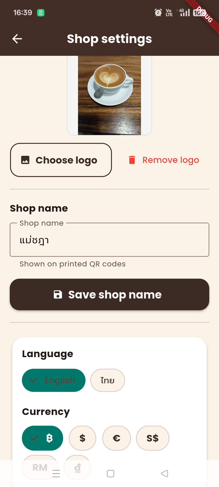

1. First Launch & PIN Setup
1. เปิดแอปครั้งแรกและตั้ง PIN
When you open the app for the first time, you will be asked to create a 6-digit PIN to protect your shop data.
เมื่อเปิดแอปเป็นครั้งแรก ระบบจะขอให้ตั้งรหัส PIN 6 หลักเพื่อป้องกันข้อมูลร้าน

📸 PIN setup screen 📸 หน้าตั้ง PIN- Enter a 6-digit PIN (avoid easy codes like 000000 or 123456).
- Enter the same PIN again to confirm.
- The app opens automatically after PIN is set.
- กรอก PIN 6 หลัก (หลีกเลี่ยงรหัสง่ายเช่น 000000 หรือ 123456)
- กรอก PIN เดิมอีกครั้งเพื่อยืนยัน
- แอปจะเปิดใช้งานได้ทันทีหลังตั้ง PIN สำเร็จ
Fingerprint Unlock
ปลดล็อกด้วยลายนิ้วมือ
Enable fingerprint unlock in Settings → Unlock with fingerprint. On subsequent launches the app prompts for your fingerprint automatically.
เปิดใช้ลายนิ้วมือได้ที่ ตั้งค่า → ปลดล็อกด้วยลายนิ้วมือ เมื่อเปิดแอปครั้งถัดไประบบจะขอลายนิ้วมือโดยอัตโนมัติ
2. Home Screen
2. หน้าหลัก
The home screen shows today's sales summary and quick-access buttons for all main features.
หน้าหลักแสดงยอดขายวันนี้และปุ่มลัดสู่ฟีเจอร์หลักทั้งหมด

📸 Home screen 📸 หน้าหลัก- Scan & Sell — Open camera to scan product QR codes
- Stock in — Receive new inventory or issue materials
- Sales report — View daily / monthly / all-time summaries
- Manage items — Add, edit, or delete products and materials
- Create QR — Generate printable QR codes for products
- สแกน & ขาย — เปิดกล้องเพื่อสแกน QR สินค้า
- รับสินค้า — รับสินค้าเข้าคลังหรือเบิกวัตถุดิบ
- รายงานยอดขาย — ดูสรุปรายวัน / รายเดือน / ทั้งหมด
- จัดการสินค้า — เพิ่ม แก้ไข หรือลบสินค้า/วัตถุดิบ
- สร้าง QR — สร้าง QR Code สำหรับพิมพ์ติดสินค้า
3. Scan & Sell
3. สแกน QR เพื่อขาย
Point the camera at a product's QR code. Each scan adds one unit to the cart automatically.
ส่องกล้องไปที่ QR Code บนสินค้า ระบบจะเพิ่มสินค้า 1 ชิ้นเข้าตะกร้าโดยอัตโนมัติทุกครั้งที่สแกน

📸 QR scanner with cart bar 📸 หน้าสแกน QR พร้อมแถบตะกร้าCheckout
ชำระเงิน
- Tap the green Pay ฿XX button at the bottom.
- Choose a payment channel (Cash / Bank Transfer / Online Sales).
- For cash: enter amount received — change is calculated automatically.
- Tap Save sale to confirm.
- A receipt appears — tap Share to send or Finish to return home.
- กดปุ่มสีเขียว จ่าย ฿XX ที่ด้านล่าง
- เลือกช่องทางชำระเงิน (เงินสด / โอนเงิน / ขายออนไลน์)
- กรณีเงินสด: กรอกจำนวนที่รับมา ระบบคิดเงินทอนให้อัตโนมัติ
- กด บันทึกการขาย เพื่อยืนยัน
- ใบเสร็จจะแสดงขึ้นมา กด แชร์ เพื่อส่ง หรือ เสร็จสิ้น เพื่อกลับหน้าหลัก

📸 Payment screen 📸 หน้าชำระเงิน
📸 Receipt screen 📸 หน้าใบเสร็จ4. Manage Products & Materials
4. จัดการสินค้าและวัตถุดิบ
Tap Manage items on the home screen to add, edit, or remove products and raw materials.
กด จัดการสินค้า บนหน้าหลักเพื่อเพิ่ม แก้ไข หรือลบสินค้าและวัตถุดิบ

📸 Manage items list 📸 รายการจัดการสินค้าAdding an Item
เพิ่มสินค้า / วัตถุดิบ
- Tap the + button (bottom-right).
- Choose type: For sale (appears on sell screen) or Material (stock tracking only).
- Fill in name, price, category, and starting stock.
- Set the Low-stock alert level (default 5 — triggers a warning badge).
- Tap Save.
- กดปุ่ม + มุมขวาล่าง
- เลือกประเภท: เมนูขาย (แสดงในหน้าขาย) หรือ วัตถุดิบ (ติดตามสต๊อกเท่านั้น)
- กรอกชื่อ ราคา หมวดหมู่ และจำนวนสต๊อกเริ่มต้น
- ตั้ง ระดับแจ้งเตือนสินค้าเหลือน้อย (ค่าเริ่มต้น 5)
- กด บันทึก
Editing & Deleting
แก้ไขและลบสินค้า
Tap Edit on any item row to update its details. Tap the ⋮ menu → Delete to remove it (confirmation required).
กด แก้ไข บนแถวสินค้าเพื่ออัปเดตข้อมูล กด ⋮ เมนู → ลบ เพื่อลบออก (ระบบจะขอยืนยัน)
5. Inventory — Receive / Use
5. คลังสินค้า — รับเข้า / เบิกใช้
Tap Stock in on the home screen. Use the Menu tab for sellable items and the Materials tab for raw ingredients.
กด รับสินค้า บนหน้าหลัก ใช้แท็บ เมนู สำหรับสินค้าขาย และแท็บ วัตถุดิบ สำหรับส่วนผสม

📸 Inventory screen (Materials tab) 📸 หน้าคลังสินค้า (แท็บวัตถุดิบ)- Receive — Add stock (e.g. new coffee beans delivery)
- Use — Deduct stock manually (e.g. used ingredients today)
- รับเข้า — เพิ่มสต๊อก (เช่น ได้รับเมล็ดกาแฟมาใหม่)
- เบิกใช้ — ตัดสต๊อกมือ (เช่น ใช้วัตถุดิบไปในวันนี้)
6. Sales Report
6. รายงานยอดขาย
Tap Sales report on the home screen to view your income summary.
กด รายงานยอดขาย บนหน้าหลักเพื่อดูสรุปรายได้

📸 Sales report (Daily view) 📸 รายงานยอดขาย (รายวัน)- Daily — Today's total sales and item count
- This month — Current month summary
- All — Lifetime totals
- Income by channel — Breakdown by Cash / Transfer / Online
- Best sellers — Top-selling products in the period
- วันนี้ — ยอดขายและจำนวนบิลวันนี้
- เดือนนี้ — สรุปเดือนปัจจุบัน
- ทั้งหมด — ยอดรวมตลอดการใช้งาน
- รายได้แยกช่องทาง — แบ่งตามเงินสด / โอน / ออนไลน์
- สินค้าขายดี — สินค้าที่ขายได้มากที่สุดในช่วงเวลานั้น
7. QR Code Creation
7. สร้าง QR Code สินค้า
Tap Create QR on the home screen to generate QR codes you can print and stick on products or a menu board.
กด สร้าง QR บนหน้าหลักเพื่อสร้าง QR Code พิมพ์ติดบนสินค้าหรือเมนู

📸 Create QR screen 📸 หน้าสร้าง QR Code- Single QR — Select a product → Create QR for this item → Share or save the image.
- Print many — Select multiple products → Create QR sheet — all QRs on one printable image.
- QR เดี่ยว — เลือกสินค้า → สร้าง QR สำหรับสินค้านี้ → แชร์หรือบันทึกภาพ
- พิมพ์หลายชิ้น — เลือกหลายรายการ → สร้างแผ่น QR — ระบบรวม QR ทั้งหมดในภาพเดียว
8. Settings
8. ตั้งค่า
Tap the ⚙️ icon (top-right on the home screen) to open Settings.
กดไอคอน ⚙️ มุมบนขวาของหน้าหลักเพื่อเข้าตั้งค่า

📸 Settings screen 📸 หน้าตั้งค่าShop Name & Logo
ชื่อร้านและโลโก้
Enter your shop name and select a logo image from your gallery. The logo appears on printed QR codes.
กรอกชื่อร้านและเลือกรูปโลโก้จากคลังภาพ โลโก้จะปรากฏบน QR Code ที่พิมพ์ออกมา
Language & Currency
ภาษาและสกุลเงิน
Switch between English and ไทย instantly. Choose your currency symbol (฿ $ € S$ RM ₫) — all prices update throughout the app.
สลับระหว่าง English และ ไทย ได้ทันที เลือกสัญลักษณ์สกุลเงิน (฿ $ € S$ RM ₫) — ราคาทุกหน้าจะเปลี่ยนตาม
Security — Change PIN / Biometric
ความปลอดภัย — เปลี่ยน PIN / ลายนิ้วมือ
Change your 6-digit PIN at any time. Toggle fingerprint unlock on or off.
เปลี่ยน PIN 6 หลักได้ตลอดเวลา เปิด/ปิดการปลดล็อกด้วยลายนิ้วมือ
Backup & Restore
สำรองข้อมูลและกู้คืน
- Back up — Creates
chochada_backup.csv. Share it to Google Drive, LINE Keep, or email. - Restore — Tap Restore from file, select the
.csvfile, confirm. All products and sales are restored.
- สำรองข้อมูล — สร้างไฟล์
chochada_backup.csvแชร์ไปยัง Google Drive, LINE Keep หรืออีเมล - กู้คืนข้อมูล — กด กู้คืนจากไฟล์ เลือกไฟล์
.csvแล้วยืนยัน ข้อมูลสินค้าและยอดขายจะกลับมาครบ
Privacy Policy & Logout
นโยบายความเป็นส่วนตัวและออกจากระบบ
Tap Privacy policy to view our data practices in your browser. Tap Lock & sign out to lock the app immediately — enter your PIN again to re-enter.
กด นโยบายความเป็นส่วนตัว เพื่อดูนโยบายข้อมูลในเบราว์เซอร์ กด ล็อก & ออกจากระบบ เพื่อล็อกแอปทันที — ต้องกรอก PIN ใหม่เพื่อเข้าใช้